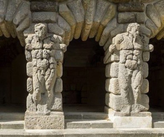

Carp pond
Facing south, l'étang aux carpes owes its name to the famous whose presence in Fontainebleau has been attested since Henry IV.

Pine grotto
An early example of an artificial grotto in France, the "grotte des pins "the end of the Louis XV wing built in place of the Ulysses wing of the Galerie d'Ulysse.

Le Grand Parterre
The creation of the Grand Parterre between 1660 and 1664 - the largest in Europe, with its 14 hectares - by André Le Nôtre and Louis Le Vau, testifies to the Louis XIV's desire to clarify space at Fontainebleau.